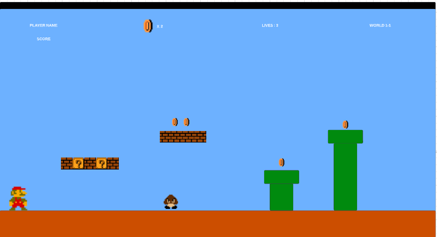

Menu ScreenThis is the screen that will open up when the user enters the game. From here, they will have the option to enter the level select screen or start the game. If they choose to click start game, they will automatically be set on the level 1 world no matter what levels they completed to that point. |
Game ScreenThe game screen is where the heart of the game is. Here, players will be able to move a Mario character around the screen gaining coins while not dying with the end goal of reaching the flag at the end. I am planning to have 5 different levels and each one will have it's own screen. |
 |
Transition ScreenThis scene will appear when the player has lost all 3 lives for that level and died. This will give the user an opportunity to either try the level again or head back to the main screen. |
Level Select ScreenI created this screen to give more flexibility to the user. They will be able to choose any of the levels they want to play as long as they have it unlocked. The levels will remain locked until they complete the previous levels to reach that point. This allows the user to go back to levels they enjoyed or if want to retry a level to recieve a higher score. Note that refreshing the page will make all of your progress disappear. |